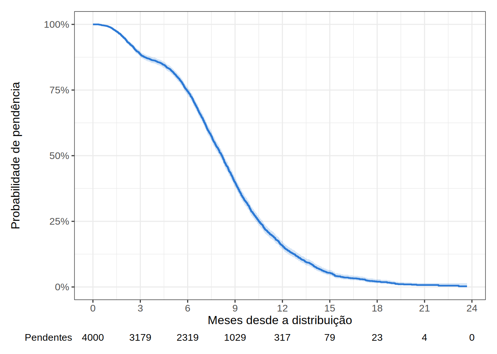
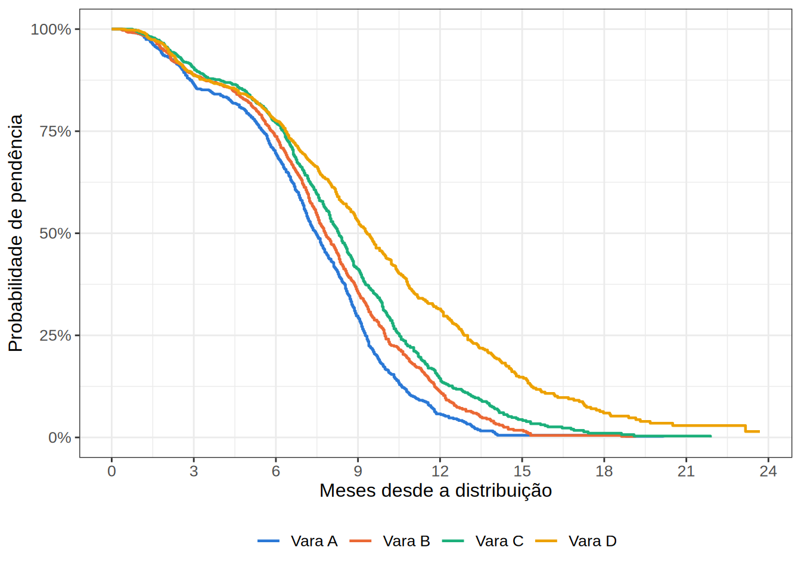
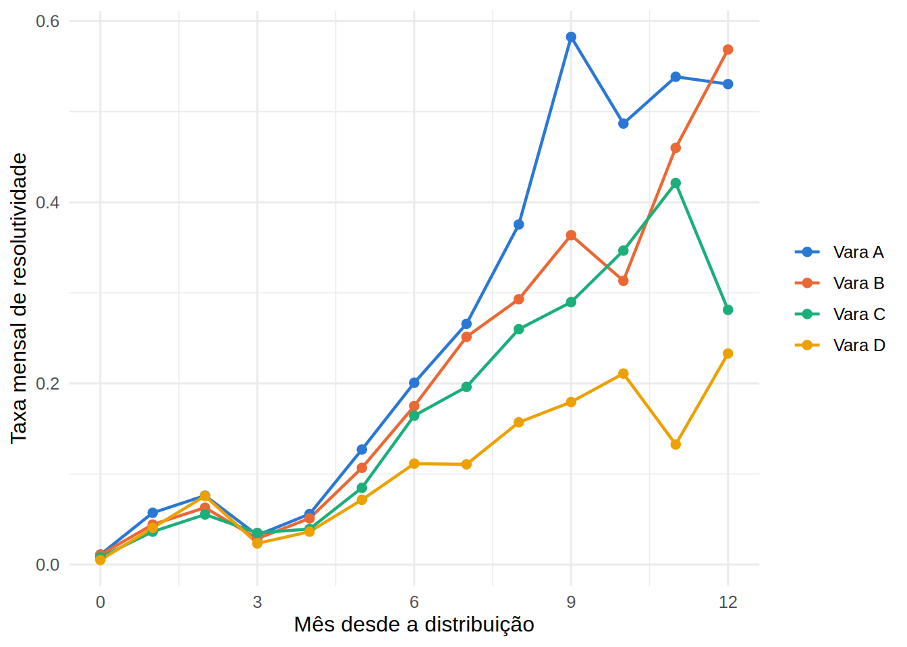
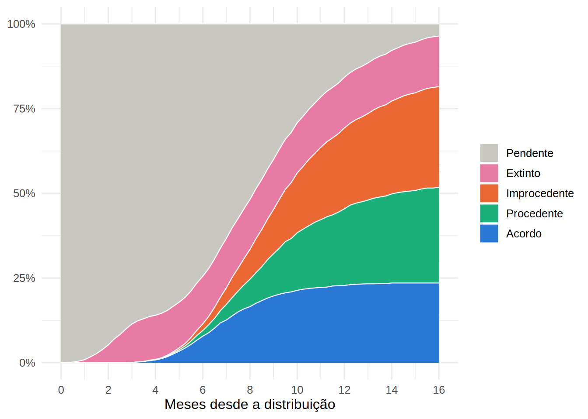

flowchart LR A[Pergunta<br/>de pesquisa] --> B[Termo inicial<br/>e ato de interesse] B --> C[Movimentos<br/>processuais] C --> D[Par tempo<br/>e ato] D --> E[Probabilidade<br/>de pendência] E --> F[Desfechos<br/>concorrentes] F --> G[Prazo e tempo<br/>médio restrito] G --> H[Fases do<br/>processo]
16 O tempo do processo: análise de duração
Pendência, prazos e desfechos concorrentes
16.1 Introdução
O processo judicial acontece no tempo. Entre a distribuição de uma ação e a sentença, entre o pedido de liminar e a decisão que o aprecia, entre a prisão e a audiência de custódia, transcorre um intervalo que tem consequências para as partes e para o próprio direito. A Constituição assegura a todos a razoável duração do processo (art. 5º, LXXVIII), mas o ordenamento raramente fixa, em dias, quanto é razoável. Badaró e Lopes Jr. (2006) chamam essa ausência de prazo máximo para os atos processuais penais de “doutrina do não-prazo”. Sem um parâmetro legal, a medida do tempo do processo passa a depender de evidência empírica.
Perguntas sobre tempo aparecem em toda parte. Quem pensa em ajuizar uma ação quer saber quanto dura um processo como o seu. O custo de litigar cresce com a duração, em honorários, provisões e custo de oportunidade. A prescrição depende do tempo transcorrido. Tribunais, corregedorias, Ministério Público, Defensoria e procuradorias usam medidas de duração para identificar gargalos, e reformas processuais, mutirões e a adoção do processo eletrônico costumam ser avaliados pelo efeito que produzem sobre o tempo.
A estatística tem uma família de métodos para esse tipo de pergunta, conhecida como análise de sobrevivência, porque nasceu do estudo do tempo até a morte. Neste livro, ela é chamada de análise de duração. A mudança não é apenas de nome. Os métodos foram desenvolvidos para resolver dois problemas que qualquer conjunto de processos apresenta e que a média e o histograma ignoram:
- Censura: na data da coleta, parte dos processos ainda não terminou, e o tempo deles é desconhecido, embora se saiba que é maior que o já transcorrido.
- Desfechos concorrentes: o processo pode terminar de várias formas, e uma delas impede as outras. Quem teve a inicial indeferida não terá sentença de mérito.
Neste capítulo, seguimos uma base de processos simulados, construída para que se conheça a resposta verdadeira de cada pergunta. Isso permite comparar cada estimativa com o valor que ela deveria alcançar e ver o tamanho do erro dos atalhos. Os modelos de regressão para o tempo do processo ficam para o capítulo “Modelos para o tempo do processo”, na Parte V.
NotaObjetivos do capítulo
Ao final do capítulo, você deverá ser capaz de:
- definir termo inicial, ato de interesse, censura e data da coleta a partir dos movimentos processuais;
- explicar por que excluir os processos pendentes distorce o tempo estimado;
- estimar e interpretar a probabilidade de pendência pelo método de Kaplan-Meier;
- calcular e ler a taxa de resolutividade e a razão de taxas;
- estimar a incidência acumulada de desfechos concorrentes pelo método de Aalen-Johansen;
- reconhecer a armadilha da taxa de êxito entre os processos decididos;
- calcular o tempo médio de pendência dentro de um prazo legal;
- descrever o processo como uma sucessão de fases.
16.1.1 Vocabulário
A análise de duração foi formulada na linguagem da medicina e da engenharia: sobrevivência, risco, falha, morte. Para o direito, alguns desses termos soam estranhos ou enganam. Uma sentença não é um “risco”, e a parte não “sobrevive” ao processo. O quadro abaixo fixa a correspondência adotada no livro. Os nomes próprios dos estimadores (Kaplan-Meier, Aalen-Johansen, Cox, Fine-Gray) são mantidos.
| Termo estatístico | Termo adotado no livro | Leitura jurídica |
|---|---|---|
| Análise de sobrevivência | Análise de duração | Estudo do tempo até um ato processual |
| Origem do tempo | Termo inicial | Distribuição, ajuizamento, prisão, fato |
| Evento | Ato de interesse ou desfecho | Sentença, decisão liminar, acordo |
| Tempo do evento | Termo final | Data do ato de interesse |
| Função de sobrevivência, \(S(t)\) | Probabilidade de pendência | Chance de o processo seguir sem o ato depois de \(t\) dias |
| \(1 - S(t)\) | Probabilidade acumulada do ato | Chance de o ato já ter ocorrido até \(t\) |
| Conjunto em risco | Processos pendentes em \(t\) | Processos que ainda podem receber o ato |
| Hazard, \(h(t)\) | Taxa de resolutividade (ou taxa do ato: de julgamento, de acordo) | Fração dos pendentes que recebe o ato por unidade de tempo |
| Hazard ratio | Razão de taxas | Velocidade relativa entre dois grupos de pendentes |
| Riscos concorrentes | Desfechos concorrentes | Formas de término que se excluem |
| Cumulative incidence function | Incidência acumulada do desfecho | Chance de terminar de uma forma até \(t\) |
| Restricted mean survival time | Tempo médio de pendência no prazo | Quanto do prazo, em média, o processo consome |
| Modelo multiestado | Modelo de fases processuais | Passagens entre fases do processo |
| Censura | Censura | Processo pendente na data da coleta |
16.2 Os elementos de uma análise de duração
Toda análise de duração começa por cinco definições, e cada uma é uma decisão substantiva, não um detalhe técnico.
A primeira é a unidade de análise: o processo, o pedido (uma liminar dentro do processo), o recurso ou o réu. A segunda é o termo inicial, o momento em que o relógio começa a correr. A terceira é o ato de interesse, cuja data é o termo final. A quarta é a data da coleta, o último dia em que o processo foi observado. A quinta, decorrência das anteriores, é a regra que transforma o registro do tribunal no par (tempo, ato).
O quadro a seguir mostra essas escolhas para uma ação de procedimento comum que depende de perícia, o tipo de processo da base usada no capítulo.
| Elemento | Definição adotada | Alternativa descartada e por quê |
|---|---|---|
| Termo inicial | Data da distribuição | A citação depende do andamento do próprio processo e excluiria quem foi extinto antes dela |
| Ato de interesse | Primeiro desfecho em primeiro grau: acordo homologado, procedência, improcedência ou extinção sem mérito | O trânsito em julgado mistura o tempo do recurso, que pede outra análise |
| Termo final | Data do movimento que registra o desfecho | A data da publicação vem dias depois e varia por razões administrativas |
| Data da coleta | Dia em que os movimentos do processo foram baixados | A data da análise atribuiria ao processo um período que ninguém observou |
A definição do ato de interesse depende da pergunta. Num estudo sobre o pedido de liminar em habeas corpus, por exemplo, o ato pode ser definido como a primeira decisão que encerra a apreciação do pedido: deferimento, indeferimento, julgamento direto do mérito ou não conhecimento. Uma decisão que apenas adia a apreciação, à espera de informações, não é ato de interesse. O pedido continua pendente, e o relógio continua correndo até a decisão seguinte.
16.2.1 A base simulada
A base reúne 4.000 ações distribuídas entre janeiro de 2024 e dezembro de 2025 a quatro varas, por sorteio. Os dados são inteiramente simulados pelo script scripts/simular-base-didatica-duracao.R e não reproduzem processos, varas ou resultados reais. A simulação imita a estrutura de uma ação que depende de perícia: a inicial pode receber ordem de emenda e ser indeferida; recebida a inicial, há citação, contestação e nomeação de perito; o laudo pode levar a um acordo ou à sentença.
São dois arquivos. O primeiro tem um processo por linha, com as características conhecidas na distribuição e a data em que os movimentos foram coletados (em três lotes, em janeiro de 2026). O segundo tem um movimento por linha, no formato que os pacotes de coleta devolvem.
processos <- read_csv("dados/duracao_processos_simulados.csv")
movimentos <- read_csv("dados/duracao_movimentos_simulados.csv")
movimentos |>
filter(processo == "SIM-0001")# A tibble: 14 × 3
processo data movimento
<chr> <date> <chr>
1 SIM-0001 2024-01-01 Distribuído por sorteio
2 SIM-0001 2024-01-10 Expedida a citação
3 SIM-0001 2024-01-12 Documento juntado
4 SIM-0001 2024-02-04 Contestação juntada
5 SIM-0001 2024-02-18 Nomeado perito
6 SIM-0001 2024-03-07 Petição juntada
7 SIM-0001 2024-04-20 Documento juntado
8 SIM-0001 2024-05-03 Petição juntada
9 SIM-0001 2024-05-16 Ato ordinatório praticado
10 SIM-0001 2024-07-14 Laudo pericial juntado
11 SIM-0001 2024-08-07 Determinada a manifestação sobre o laudo
12 SIM-0001 2024-08-08 Proposta de acordo juntada
13 SIM-0001 2024-08-12 Homologado o acordo
14 SIM-0001 2024-11-27 Arquivado definitivamente A base de processos também tem colunas iniciadas por real_, com a trajetória completa de cada processo: o desfecho e a data em que ele ocorreria, mesmo depois da coleta. Nenhuma pesquisa real dispõe dessas colunas. Elas existem aqui apenas para medir o erro de cada estimativa e não entram nas análises, salvo quando o texto compara uma estimativa com a verdade.
16.2.2 Do movimento ao par (tempo, ato)
O ato de interesse é identificado pelos títulos dos movimentos. Uma tabela de regras associa cada título que registra um desfecho à categoria correspondente.
regras <- tribble(
~movimento, ~desfecho,
"Homologado o acordo", "acordo",
"Julgado procedente o pedido", "procedente",
"Julgado procedente em parte o pedido", "procedente",
"Julgado improcedente o pedido", "improcedente",
"Extinto o processo sem resolução do mérito", "extinto",
"Indeferida a petição inicial", "extinto"
)A função abaixo aplica as regras: guarda o primeiro desfecho de cada processo e, para os que não têm desfecho, usa a data da coleta como termo final. O tempo é medido em dias e convertido em meses.
montar_base <- function(processos, movimentos, regras) {
desfechos <- movimentos |>
inner_join(regras, by = "movimento") |>
slice_min(data, by = processo, with_ties = FALSE) |>
select(processo, data_desfecho = data, desfecho)
processos |>
left_join(desfechos, by = "processo") |>
mutate(
desfecho = coalesce(desfecho, "pendente"),
data_fim = coalesce(data_desfecho, data_coleta),
dias = as.numeric(data_fim - data_distribuicao),
meses = dias / 30.4375,
status = as.integer(desfecho != "pendente")
)
}
base <- montar_base(processos, movimentos, regras)
base |>
count(desfecho)# A tibble: 5 × 2
desfecho n
<chr> <int>
1 acordo 684
2 extinto 545
3 improcedente 745
4 pendente 1317
5 procedente 709A variável status vale 1 quando o desfecho foi observado e 0 quando o processo estava pendente na data da coleta. O par (meses, status) é a matéria-prima de tudo o que segue.
Na coleta, 1.317 processos (32,9%) estavam pendentes. O que fazer com eles é o primeiro problema da análise de duração.
16.3 Censura
Um processo distribuído há cinco meses e ainda pendente não tem tempo desconhecido. Sabemos que o tempo dele é maior que cinco meses. Essa informação parcial chama-se censura, e a análise de duração existe para aproveitá-la em vez de descartá-la.
Há três tipos de censura:
- À direita: o ato ainda não ocorreu na data da coleta. O tempo é maior que o observado. É o caso dos processos pendentes, o mais comum.
- À esquerda: sabe-se que o ato já ocorreu, mas não quando. Ao consultar os autos, verifica-se que a liminar foi apreciada, mas o sistema não registra a data da decisão.
- Intervalar: sabe-se que o ato ocorreu entre duas datas. O laudo pericial chegou depois da nomeação do perito e antes da ordem para que as partes se manifestassem sobre ele, mas a juntada não tem movimento próprio.
Os métodos deste capítulo tratam a censura à direita. A censura intervalar é tratada no capítulo de modelos.
16.3.1 O que pode e o que não pode ser censura
Os métodos supõem censura não informativa: o motivo pelo qual o processo deixou de ser observado não pode ter relação com o tempo que faltava para o ato. A data da coleta cumpre esse requisito, porque é fixada pelo pesquisador, e não pelo processo.
Um desfecho de outro tipo não cumpre. Se o ato de interesse é a sentença de mérito e o processo foi extinto por indeferimento da inicial, tratá-lo como censurado equivale a supor que ele ainda poderia receber sentença de mérito, o que é falso. A seção sobre desfechos concorrentes mostra a consequência desse erro.
16.3.2 A data da censura é a data da observação
O termo final de um processo pendente é o dia em que ele foi observado pela última vez, e não o dia em que a análise é feita. Na base simulada, os movimentos foram baixados em três lotes, com uma semana de intervalo. Se a análise usasse a data de hoje, cada processo pendente ganharia semanas de seguimento sem nenhuma decisão, semanas que ninguém observou.
base_hoje <- base |>
mutate(
data_fim = coalesce(data_desfecho, as.Date("2026-03-02")),
meses = as.numeric(data_fim - data_distribuicao) / 30.4375
)
pend_coleta <- summary(survfit(Surv(meses, status) ~ 1, data = base), times = 12)$surv
pend_hoje <- summary(survfit(Surv(meses, status) ~ 1, data = base_hoje), times = 12)$survCom a censura na data da coleta, a probabilidade de um processo seguir pendente após 12 meses é estimada em 15,8%, próxima da verdadeira (15,3%). Com a censura na data da análise, sobe para 18,9%. O erro faz os processos parecerem mais lentos do que são.
16.3.3 Evento não detectado vira censura
Um desfecho que a tabela de regras não reconhece não desaparece da análise. O processo continua pendente na base, como se esperasse uma decisão que já aconteceu. Nada quebra, e por isso o erro é silencioso.
Suponha que a tabela de regras tivesse apenas o título “Extinto o processo sem resolução do mérito” para a extinção. A extinção por indeferimento da petição inicial tem título próprio e ficaria de fora.
regras_incompletas <- regras |>
filter(movimento != "Indeferida a petição inicial")
base_incompleta <- montar_base(processos, movimentos, regras_incompletas)
bind_rows(
completa = count(base, desfecho),
incompleta = count(base_incompleta, desfecho),
.id = "regras"
) |>
pivot_wider(names_from = regras, values_from = n)# A tibble: 5 × 3
desfecho completa incompleta
<chr> <int> <int>
1 acordo 684 684
2 extinto 545 185
3 improcedente 745 745
4 pendente 1317 1677
5 procedente 709 709Com as regras incompletas, 360 processos extintos passam por pendentes. A prevenção é simples, porque a lista de títulos de movimento é finita e cabe numa revisão manual. Antes de estimar qualquer coisa, liste todos os títulos e confira cada um contra a definição do ato de interesse.
movimentos |>
count(movimento, sort = TRUE)# A tibble: 25 × 2
movimento n
<chr> <int>
1 Distribuído por sorteio 4000
2 Expedida a citação 3580
3 Documento juntado 3467
4 Certidão expedida 3451
5 Contestação juntada 3445
6 Ato ordinatório praticado 3434
7 Petição juntada 3368
8 Nomeado perito 3310
9 Suspensão do prazo 2685
10 Laudo pericial juntado 2635
# ℹ 15 more rowsA lista também revela títulos que parecem desfechos e não são. “Indeferida a tutela de urgência” começa com a mesma palavra que “Indeferida a petição inicial”, mas não encerra o processo; uma regra que procurasse apenas o termo “Indeferida” contaria a decisão sobre a tutela como extinção. Uma segunda checagem usa a coerência entre movimentos: processos que constam como pendentes, mas já foram arquivados definitivamente, são candidatos a evento não detectado.
arquivados <- movimentos |>
filter(movimento == "Arquivado definitivamente") |>
distinct(processo)
base_incompleta |>
filter(desfecho == "pendente") |>
semi_join(arquivados, by = "processo") |>
nrow()[1] 307Com as regras completas, nenhum processo pendente está arquivado.
16.4 O desenho da coleta
Antes de qualquer estimador, a forma como os processos entram na base decide o que pode ser estimado. Há três desenhos comuns.
- Coorte por distribuição: todos os processos distribuídos num período, decididos ou não, observados até a data da coleta. É o desenho que a análise de duração pressupõe (Corrêa; Stern, 2025).
- Decididos num período: as sentenças publicadas num ano, por exemplo, como num banco de sentenças. Só entram processos que já terminaram.
- Acervo: os processos em tramitação numa data. Entram os que estavam pendentes naquele dia.
Na coorte, o atalho mais comum é calcular a média apenas dos processos já decididos. O atalho descarta exatamente os mais lentos, que ainda esperam.
real_meses <- as.numeric(processos$real_data_desfecho - processos$data_distribuicao) / 30.4375
tibble(
medida = c(
"Média real (todos, sem censura)",
"Média só dos decididos",
"Média com pendentes encerrados na coleta"
),
meses = c(
mean(real_meses),
mean(base$meses[base$status == 1]),
mean(base$meses)
)
)# A tibble: 3 × 2
medida meses
<chr> <dbl>
1 Média real (todos, sem censura) 8.34
2 Média só dos decididos 7.33
3 Média com pendentes encerrados na coleta 6.73Os dois atalhos subestimam o tempo: 7,3 e 6,7 meses, contra 8,3 meses verdadeiros. O viés seria maior com seguimento mais curto.
O acervo erra no sentido oposto. Um processo longo fica mais tempo em tramitação e, por isso, tem mais chance de estar no acervo em qualquer data. Os processos de um acervo são, em média, mais longos que os processos de uma coorte.
data_acervo <- as.Date("2025-06-30")
acervo <- base |>
mutate(real_meses = real_meses) |>
filter(data_distribuicao <= data_acervo, data_fim > data_acervo) |>
mutate(entrada = as.numeric(data_acervo - data_distribuicao) / 30.4375)
mean(acervo$real_meses)[1] 10.19846Os 1.395 processos em tramitação em 30 de junho de 2025 duram, em média, 10,2 meses, contra 8,3 meses de todos os processos. Medidas como o tempo médio dos processos pendentes descrevem o acervo, e não o tempo que um processo novo deve esperar.
O desenho dos decididos num período não tem viés de sentido fixo. Se a entrada de processos é estável há muito tempo, os decididos num ano podem representar bem as durações; se a entrada cresce ou diminui, ou se a janela começa pouco depois do início da série, as durações curtas ou as longas ficam sobrerrepresentadas. Em todos os casos, o desenho não observa os processos que ainda não terminaram.
DicaEntrada tardia
Quando a base parte do acervo, ainda é possível estimar o tempo corretamente, desde que cada processo entre na análise apenas a partir do momento em que passou a ser observado. Em R, isso se faz com o tempo de entrada no objeto Surv():
km_acervo_ingenuo <- survfit(Surv(meses, status) ~ 1, data = acervo)
km_acervo_entrada <- survfit(Surv(entrada, meses, status) ~ 1, data = acervo)
c(
ingenuo = unname(quantile(km_acervo_ingenuo, 0.5)$quantile),
entrada_tardia = unname(quantile(km_acervo_entrada, 0.5)$quantile),
real = median(real_meses)
) ingenuo entrada_tardia real
9.757700 8.312115 8.147844 O processo distribuído há dez meses na data do acervo só conta a partir do décimo mês: antes disso, ele não estava sob observação, e quem terminou antes dele nunca entrou na base.
16.5 O estimador de Kaplan-Meier
A probabilidade de pendência, \(S(t)\), é a probabilidade de o processo seguir sem o ato de interesse depois de \(t\) dias:
\[ S(t) = P(T > t) \]
Se não houvesse censura, bastaria contar a proporção de processos com tempo maior que \(t\). Com censura, essa proporção não pode ser calculada, porque não se sabe se um processo pendente aos cinco meses ainda estará pendente aos seis. O estimador de Kaplan-Meier (Kaplan; Meier, 1958) contorna o problema dividindo o tempo em etapas. Em cada dia em que há ao menos um ato, calcula-se a fração dos processos pendentes que recebeu o ato. A probabilidade de seguir pendente é o produto das frações dos que não receberam:
\[ \hat S(t) = \prod_{t_i \le t} \left(1 - \frac{d_i}{n_i}\right) \]
em que \(d_i\) é o número de atos no dia \(t_i\) e \(n_i\) é o número de processos pendentes imediatamente antes de \(t_i\). O processo censurado conta entre os pendentes até a data da coleta e sai da conta depois dela, sem ser tratado como decidido.
16.5.1 Um exemplo à mão
Dez processos, com o tempo em dias até a sentença ou até a coleta:
exemplo <- tribble(
~processo, ~dias, ~status,
1, 30, 1,
2, 45, 0,
3, 45, 1,
4, 60, 1,
5, 80, 0,
6, 90, 1,
7, 90, 1,
8, 120, 0,
9, 150, 1,
10, 200, 0
)A tabela abaixo refaz o cálculo do estimador. Em cada dia, pendentes conta os processos ainda sob observação, decididos os que receberam o ato e censurados os que saíram da observação naquele dia.
exemplo |>
group_by(dias) |>
summarise(decididos = sum(status), censurados = sum(1 - status)) |>
mutate(
pendentes = nrow(exemplo) - lag(cumsum(decididos + censurados), default = 0),
taxa = decididos / pendentes,
pendencia = cumprod(1 - taxa)
)# A tibble: 8 × 6
dias decididos censurados pendentes taxa pendencia
<dbl> <dbl> <dbl> <dbl> <dbl> <dbl>
1 30 1 0 10 0.1 0.9
2 45 1 1 9 0.111 0.8
3 60 1 0 7 0.143 0.686
4 80 0 1 6 0 0.686
5 90 2 0 5 0.4 0.411
6 120 0 1 3 0 0.411
7 150 1 0 2 0.5 0.206
8 200 0 1 1 0 0.206No dia 30, um dos dez processos foi decidido, e a probabilidade de pendência cai para 0,9. No dia 45, um processo é decidido e outro é censurado; o censurado ainda conta entre os pendentes naquele dia (convenção usual), e a probabilidade cai para \(0{,}9 \times 8/9 = 0{,}8\). Nos dias 80, 120 e 200, só há censura: a curva não cai, mas o número de pendentes diminui, e cada ato posterior passa a pesar mais. A mediana é o primeiro dia em que a pendência fica igual ou abaixo de 0,5: 90 dias. A média dos seis processos decididos (77,5 dias) subestima o tempo, porque ignora os quatro processos que ainda esperavam.
A função survfit() do pacote survival faz o mesmo cálculo:
survfit(Surv(dias, status) ~ 1, data = exemplo) |>
summary()Call: survfit(formula = Surv(dias, status) ~ 1, data = exemplo)
time n.risk n.event survival std.err lower 95% CI upper 95% CI
30 10 1 0.900 0.0949 0.7320 1.00
45 9 1 0.800 0.1265 0.5868 1.00
60 7 1 0.686 0.1515 0.4447 1.00
90 5 2 0.411 0.1756 0.1782 0.95
150 2 1 0.206 0.1699 0.0408 1.0016.5.2 A curva da base simulada
Na base completa, o mesmo estimador produz a curva de pendência. O pacote ggsurvfit desenha a curva com o intervalo de confiança e a tabela de processos pendentes em cada momento.
km <- survfit2(Surv(meses, status) ~ 1, data = base)
km |>
ggsurvfit(linewidth = 0.8, color = "#2a78d6") +
add_confidence_interval(fill = "#2a78d6") +
add_risktable(risktable_stats = "n.risk", stats_label = list(n.risk = "Pendentes")) +
scale_x_continuous(breaks = seq(0, 24, 3)) +
scale_y_continuous(labels = scales::percent) +
labs(x = "Meses desde a distribuição", y = "Probabilidade de pendência")
kmCall: survfit(formula = Surv(meses, status) ~ 1, data = base)
n events median 0.95LCL 0.95UCL
[1,] 4000 2683 8.18 8.02 8.31A mediana estimada é de 8,2 meses, e a verdadeira, de 8,1 meses. Aos 6 e aos 12 meses, a probabilidade de pendência estimada é de 74,5% e 15,8%; as verdadeiras são 74,4% e 15,3%. O estimador recupera a verdade a partir de dados em que um terço dos processos estava pendente.
A curva se lê pela vertical e pela horizontal. Pela vertical: aos 12 meses, cerca de 16% dos processos ainda não tiveram desfecho. Pela horizontal: metade dos processos tem desfecho até 8,2 meses. A curva informa quando os processos terminam, e não como terminam. Ela não diz nada sobre a chance de vitória.
16.6 Comparação entre grupos
As curvas podem ser estimadas por grupo. Na base, os processos são sorteados entre quatro varas.
km_vara <- survfit2(Surv(meses, status) ~ vara, data = base)
km_vara |>
ggsurvfit(linewidth = 0.8) +
scale_color_manual(values = cores_vara) +
scale_x_continuous(breaks = seq(0, 24, 3)) +
scale_y_continuous(labels = scales::percent) +
labs(x = "Meses desde a distribuição", y = "Probabilidade de pendência")
A curva da Vara D fica acima das outras: os processos dela ficam pendentes por mais tempo. O teste log-rank verifica se as diferenças entre as curvas poderiam ser atribuídas ao acaso. Em cada dia em que há atos, o teste compara o número de atos observados em cada grupo com o número esperado se todos os grupos tivessem a mesma taxa, e soma as diferenças ao longo do tempo.
survdiff(Surv(meses, status) ~ vara, data = base)Call:
survdiff(formula = Surv(meses, status) ~ vara, data = base)
N Observed Expected (O-E)^2/E (O-E)^2/V
vara=Vara A 1001 723 530 70.6484 90.488
vara=Vara B 1012 685 600 12.0722 15.795
vara=Vara C 998 665 673 0.0979 0.132
vara=Vara D 989 610 880 83.0532 131.289
Chisq= 177 on 3 degrees of freedom, p= <2e-16 A coluna Observed mostra os desfechos observados em cada vara, e Expected, os esperados se as quatro varas tivessem o mesmo ritmo. A Vara D teve muito menos desfechos que o esperado, e a Vara A, mais. O valor-p muito pequeno indica que diferenças desse tamanho dificilmente surgiriam por acaso.
Três cautelas acompanham o teste. O valor-p não mede o tamanho da diferença: com milhares de processos, diferenças pequenas também são significativas, e o tamanho deve ser lido nas curvas, na mediana ou no tempo médio no prazo. O teste resume a curva inteira e perde força quando as curvas se cruzam, porque diferenças de sinal oposto se compensam. Por fim, datas registradas em dias produzem muitos empates, que o teste trata sem dificuldade, mas que limitam a precisão de comparações nos primeiros dias.
Comparações entre varas, câmaras ou comarcas costumam ser lidas como diferenças de desempenho. Antes dessa leitura, é preciso saber se os grupos recebem processos comparáveis. Aqui, o sorteio garante que sim; em dados reais, a distribuição entre órgãos pode depender da matéria, do território ou da prevenção.
16.7 Limitações do Kaplan-Meier
O estimador de Kaplan-Meier é o ponto de partida, e não o ponto de chegada. Seis limitações orientam o restante do capítulo e o capítulo de modelos.
- Um ato por vez. O estimador trata todos os desfechos como um só ou trata os desfechos diferentes do ato de interesse como censura. A segunda opção é errada, como mostra a seção sobre desfechos concorrentes.
- Censura não informativa. Se os processos deixam de ser observados por razões ligadas ao tempo que faltava, as estimativas ficam viesadas.
- A média não é identificável. Sem seguimento até o último processo, a área sob a curva inteira não pode ser calculada; a mediana pode nem ser atingida, quando mais da metade dos processos segue pendente. O tempo médio dentro de um prazo resolve o problema.
- Estimar além do seguimento. A curva só existe até o último tempo observado.
- Coortes com seguimentos diferentes. Processos distribuídos no fim do período foram observados por pouco tempo e só informam sobre o início da curva.
- Sem ajuste. O estimador compara grupos, mas não separa o efeito de uma característica do efeito de outras. Esse é o papel dos modelos de regressão.
O quarto e o quinto pontos se combinam numa armadilha de código. Considere as coortes semestrais de distribuição. A do segundo semestre de 2025 foi observada por, no máximo, sete meses.
base <- base |>
mutate(coorte = paste0(
format(data_distribuicao, "%Y"), "-S",
if_else(as.integer(format(data_distribuicao, "%m")) <= 6, 1, 2)
))
km_coorte <- survfit(Surv(meses, status) ~ coorte, data = base)
summary(km_coorte, times = 12, extend = TRUE)$surv[1] 0.1506024 0.1536082 0.1900561 0.6857068summary(km_coorte, times = 12, extend = TRUE)$n.risk[1] 150 149 18 0Com extend = TRUE, a função devolve uma probabilidade de pendência aos 12 meses para a coorte de 2025-S2 (68,6%), embora nenhum processo dessa coorte tenha sido observado por 12 meses (a coluna n.risk vale zero). O valor é apenas o último ponto da curva repetido. Uma regra prática é anular as estimativas quando restam poucos processos pendentes sob observação, por exemplo menos de 30.
16.8 Taxa de resolutividade
A fração \(d_i / n_i\) que aparece no estimador de Kaplan-Meier tem nome próprio. É a taxa de resolutividade: entre os processos pendentes num momento, a fração que recebe o ato. Na estatística, é o hazard. Quando o ato é a sentença, pode-se falar em taxa de julgamento; quando é o acordo, em taxa de acordo.
Em tempo contínuo, a taxa é definida como limite:
\[ h(t) = \lim_{\Delta t \to 0} \frac{P(t \le T < t + \Delta t \mid T \ge t)}{\Delta t} \]
A leitura é a mesma: entre os que chegaram a \(t\) sem o ato, a velocidade com que o ato acontece. A taxa não é uma probabilidade. É medida por unidade de tempo e pode ser maior que 1 quando a unidade é longa.
A curva de pendência mostra o resultado acumulado; a taxa mostra o ritmo em cada momento. Para estimá-la por mês, divide-se o seguimento de cada processo em períodos mensais e, em cada mês, divide-se o número de desfechos pelo tempo que os processos passaram pendentes naquele mês.
taxas <- survSplit(
Surv(meses, status) ~ vara, data = base,
cut = 1:24, start = "inicio", episode = "mes"
) |>
group_by(vara, mes) |>
summarise(
desfechos = sum(status),
tempo_pendente = sum(meses - inicio),
.groups = "drop"
) |>
mutate(mes = mes - 1, taxa = desfechos / tempo_pendente) |>
filter(mes <= 12)
ggplot(taxas, aes(mes, taxa, color = vara)) +
geom_line(linewidth = 0.8) +
geom_point(size = 2) +
scale_color_manual(values = cores_vara) +
scale_x_continuous(breaks = seq(0, 12, 3)) +
labs(x = "Mês desde a distribuição", y = "Taxa mensal de resolutividade", color = NULL)
Nos primeiros meses, a taxa é baixa e igual nas quatro varas: só há extinções, como o indeferimento da inicial, que não dependem do ritmo da vara. Depois do quinto mês, com a chegada dos laudos, a taxa sobe, mais rápido nas Varas A e B e mais devagar na Vara D. A taxa explica a forma da curva de pendência: onde a taxa é alta, a curva cai depressa. O gráfico para no 12º mês porque, depois dele, restam poucos processos pendentes em cada vara, e a taxa mensal passa a oscilar ao acaso.
16.8.1 Taxa acumulada
A soma das taxas ao longo do tempo é a taxa acumulada, estimada pelo método de Nelson-Aalen como \(\hat H(t) = \sum_{t_i \le t} d_i / n_i\). Ela está ligada à probabilidade de pendência pela relação aproximada \(S(t) \approx e^{-H(t)}\). Na prática, é mais usada como ferramenta de diagnóstico, porque a inclinação da curva acumulada é a taxa: trechos íngremes indicam meses de muitos desfechos; trechos planos, meses de pouca atividade. O objeto do survfit() guarda a taxa acumulada na coluna cumhaz.
survfit(Surv(meses, status) ~ 1, data = base) |>
summary(times = c(3, 6, 9, 12)) |>
with(tibble(meses = time, taxa_acumulada = cumhaz, pendencia = surv))# A tibble: 4 × 3
meses taxa_acumulada pendencia
<dbl> <dbl> <dbl>
1 3 0.121 0.886
2 6 0.294 0.745
3 9 0.913 0.400
4 12 1.84 0.15816.8.2 Razão de taxas
A taxa permite comparar grupos de forma multiplicativa. A razão de taxas entre duas varas é a taxa de uma dividida pela da outra. Com o mesmo desdobramento do seguimento, calcula-se a razão entre a Vara D e a Vara A antes e depois do quarto mês, quando começam a chegar os laudos.
razao <- survSplit(
Surv(meses, status) ~ vara, data = base,
cut = 4, start = "inicio", episode = "periodo"
) |>
filter(vara %in% c("Vara A", "Vara D")) |>
mutate(periodo = if_else(periodo == 1, "Até 4 meses", "Depois de 4 meses")) |>
group_by(periodo, vara) |>
summarise(taxa = sum(status) / sum(meses - inicio), .groups = "drop") |>
pivot_wider(names_from = vara, values_from = taxa) |>
mutate(razao_D_A = `Vara D` / `Vara A`)
razao# A tibble: 2 × 4
periodo `Vara A` `Vara D` razao_D_A
<chr> <dbl> <dbl> <dbl>
1 Até 4 meses 0.0433 0.0354 0.817
2 Depois de 4 meses 0.213 0.124 0.581Até o quarto mês, quando quase todo desfecho é extinção, a taxa da Vara D é 82% da taxa da Vara A. Depois, com as sentenças, cai para 58%. A razão de taxas mede velocidade entre os processos pendentes. Não é uma razão entre durações nem entre probabilidades de ganhar. O exemplo também mostra que a razão pode mudar ao longo do processo, o que importa para o modelo de Cox, apresentado no capítulo de modelos.
16.9 O processo como sucessão de fases
Até aqui, o processo teve dois estados: pendente ou com desfecho. O processo real passa por fases. A ação é distribuída, a inicial pode receber ordem de emenda, o réu é citado, o perito é nomeado, o laudo chega, as partes se manifestam, o processo vai concluso e é sentenciado; da sentença cabe recurso, e só depois vem o trânsito em julgado.
flowchart LR
D[Distribuído] --> E[Emenda da inicial]
D --> C[Citação e resposta]
E --> C
C --> P[Perícia]
P --> L[Laudo juntado]
L --> S[Concluso para sentença]
E -->|inicial indeferida| X((Extinto))
C -->|desistência| X
L -->|laudo favorável| A((Acordo))
S --> PR((Procedente))
S --> IM((Improcedente))
PR --> REC[Recurso]
IM --> REC
REC --> TJ((Trânsito<br/>em julgado))
REC -.->|sentença anulada| P
C -.-> SU[Suspensão]
SU -.-> C
O diagrama distingue fases transitórias, das quais o processo sai (perícia, conclusão), e fases terminais, das quais não sai (o trânsito em julgado). Cada passagem entre fases tem a sua própria taxa: a taxa de chegada do laudo, a taxa de acordo depois do laudo, a taxa de sentença depois da conclusão. As linhas tracejadas mostram pausas e voltas. A suspensão para o relógio da fase sem encerrar o processo; a anulação da sentença no recurso devolve o processo à instrução.
O mapa das fases tem ciclos, mas a trajetória de cada processo, vista no tempo, não volta atrás: é uma sequência de passagens com datas, como o histórico de commits de um repositório Git (capítulo “Git e GitHub: versões, colaboração e proteção do projeto”), com uma linha principal e ramos que se reencontram com ela, como agravos e embargos.
Nos dados, os movimentos funcionam como inspeções do estado do processo. A tradução de movimentos em fases é a camada que muda de um tribunal para outro. Em bases como o DataJud, os movimentos vêm com os códigos da Tabela Processual Unificada do Conselho Nacional de Justiça, e a tradução pode ser feita por código, e não pelo texto do título. Algumas passagens não têm movimento próprio, como a juntada do laudo em muitos sistemas, e só são conhecidas dentro de um intervalo de datas.
Os desfechos concorrentes, tema da próxima seção, são o caso mais simples desse esquema: uma fase transitória (pendente) e várias fases terminais (os desfechos).
16.10 Desfechos concorrentes
Na base, o processo termina de quatro formas: acordo, procedência, improcedência ou extinção sem mérito. As formas se excluem. Quem fez acordo não terá sentença, e quem teve a inicial indeferida não terá laudo. Na estatística, são os riscos concorrentes; aqui, desfechos concorrentes.
Suponha que a pergunta seja a probabilidade de um processo terminar em improcedência até 12 meses. O atalho é aplicar o Kaplan-Meier com a improcedência como ato e os demais desfechos como censura, e ler \(1 - \hat S(t)\). O atalho trata o processo que fez acordo como se ainda pudesse ser julgado improcedente e redistribui a probabilidade dele entre os que continuam pendentes.
O estimador adequado é o de Aalen-Johansen (Aalen; Johansen, 1978). Em cada momento, a probabilidade de terminar pelo desfecho \(k\) é a probabilidade de ter chegado ali pendente, estimada pelo Kaplan-Meier de todos os desfechos juntos, vezes a fração dos pendentes que terminou pelo desfecho \(k\):
\[ \hat F_k(t) = \sum_{t_i \le t} \hat S(t_{i-1}) \, \frac{d_{k,i}}{n_i} \]
O resultado é a incidência acumulada do desfecho \(k\). As incidências de todos os desfechos, somadas à probabilidade de pendência, dão 1 em todo momento (Putter; Fiocco; Geskus, 2007; Austin; Lee; Fine, 2016).
No survfit(), basta informar o desfecho como fator, com a censura como primeiro nível.
base <- base |>
mutate(desfecho_f = factor(
desfecho,
levels = c("pendente", "acordo", "procedente", "improcedente", "extinto")
))
aj <- survfit(Surv(meses, desfecho_f) ~ 1, data = base)
summary(aj, times = c(6, 12, 18))$pstate |>
round(3) (s0) acordo procedente improcedente extinto
[1,] 0.745 0.078 0.016 0.020 0.141
[2,] 0.158 0.228 0.226 0.239 0.149
[3,] 0.020 0.235 0.290 0.305 0.149A primeira coluna é a probabilidade de seguir pendente, e as demais, a incidência acumulada de cada desfecho. O gráfico de áreas empilhadas mostra a composição ao longo do tempo.
rotulos <- c(
"(s0)" = "Pendente", acordo = "Acordo", procedente = "Procedente",
improcedente = "Improcedente", extinto = "Extinto"
)
situacao <- tibble(meses = seq(0, 16, 0.25)) |>
bind_cols(as_tibble(summary(aj, times = seq(0, 16, 0.25))$pstate)) |>
setNames(c("meses", aj$states)) |>
pivot_longer(-meses, names_to = "estado", values_to = "prob") |>
mutate(estado = factor(rotulos[estado], levels = names(cores_desfecho)))
ggplot(situacao, aes(meses, prob, fill = estado)) +
geom_area(color = "white", linewidth = 0.4) +
scale_fill_manual(values = cores_desfecho) +
scale_x_continuous(breaks = seq(0, 16, 2)) +
scale_y_continuous(labels = scales::percent) +
labs(x = "Meses desde a distribuição", y = NULL, fill = NULL)
A extinção é precoce e quase toda ocorre nos primeiros seis meses. O acordo vem logo depois dos laudos, e as sentenças, procedentes ou improcedentes, chegam mais tarde.
16.10.1 O erro de tratar outro desfecho como censura
A comparação abaixo usa a improcedência. A base simulada permite calcular a incidência verdadeira, com as colunas real_.
km_improcedente <- survfit(Surv(meses, desfecho == "improcedente") ~ 1, data = base)
tibble(
meses = c(6, 12, 18),
verdade = sapply(meses, \(t) mean(real_meses <= t & processos$real_desfecho == "improcedente")),
aalen_johansen = summary(aj, times = meses)$pstate[, 4],
um_menos_km = 1 - summary(km_improcedente, times = meses)$surv
)# A tibble: 3 × 4
meses verdade aalen_johansen um_menos_km
<dbl> <dbl> <dbl> <dbl>
1 6 0.0198 0.0196 0.0243
2 12 0.246 0.239 0.475
3 18 0.311 0.305 0.812 Aos 12 meses, a incidência verdadeira de improcedência é de 24,6%, e o estimador de Aalen-Johansen chega a 23,9%. O atalho do Kaplan-Meier estima 47,5%. O erro cresce com o tempo, porque cada acordo e cada extinção, tratados como censura, transferem probabilidade para a improcedência.
O Kaplan-Meier continua correto para o desfecho composto. Quando a pergunta é quanto tempo leva até qualquer desfecho, todos os desfechos são o ato de interesse, e não há concorrência. O erro está apenas em estimar um desfecho específico tratando os outros como censura. Por isso, uma estratégia comum é usar o desfecho composto na análise principal e decompô-lo por tipo com o Aalen-Johansen.
16.10.2 A sentença também concorre
Os desfechos concorrentes não se limitam aos modos de encerramento do processo. Sempre que o ato de interesse é um acontecimento intermediário, a própria sentença pode impedi-lo. Num estudo sobre o tempo até a apreciação de um pedido liminar, o julgamento do mérito torna o pedido prejudicado. Num estudo sobre acordos, a sentença encerra a fase em que o acordo seria homologado. Num estudo sobre a prescrição intercorrente, o pagamento ou a extinção por outro motivo impedem que ela ocorra.
O raciocínio é o mesmo: o acontecimento que impede o ato de interesse não é censura. Ou ele é incorporado a um desfecho composto, ou entra como desfecho concorrente, com a incidência acumulada de cada um.
16.10.3 As fases como estados
O mesmo estimador se estende a fases intermediárias. Na base, o laudo tem movimento próprio. Cada processo pode ser descrito em até dois trechos: da distribuição ao laudo e do laudo ao desfecho. O survfit() estima, em cada momento, a probabilidade de o processo estar em cada fase.
laudos <- movimentos |>
filter(movimento == "Laudo pericial juntado") |>
select(processo, data_laudo = data)
trechos <- base |>
left_join(laudos, by = "processo") |>
mutate(t_laudo = as.numeric(data_laudo - data_distribuicao) / 30.4375)
fases <- bind_rows(
trechos |>
transmute(
processo, inicio = 0,
fim = coalesce(t_laudo, meses),
estado = if_else(is.na(t_laudo), desfecho, "laudo")
),
trechos |>
filter(!is.na(t_laudo)) |>
transmute(processo, inicio = t_laudo, fim = meses, estado = desfecho)
) |>
filter(fim > inicio) |>
mutate(estado = factor(
estado,
levels = c("pendente", "laudo", "acordo", "procedente", "improcedente", "extinto")
))
fit_fases <- survfit(Surv(inicio, fim, estado) ~ 1, data = fases, id = processo)
summary(fit_fases, times = c(3, 6, 9, 12))$pstate |>
round(3) (s0) laudo acordo procedente improcedente extinto
[1,] 0.850 0.036 0.001 0.000 0.000 0.113
[2,] 0.358 0.388 0.078 0.016 0.019 0.141
[3,] 0.064 0.337 0.196 0.124 0.130 0.148
[4,] 0.005 0.153 0.227 0.226 0.239 0.150A primeira coluna é a probabilidade de o processo seguir sem laudo e sem desfecho; a segunda, de estar com o laudo juntado à espera do desfecho. Aos seis meses, 38,8% dos processos estão com o laudo juntado, mais do que os que ainda aguardam o laudo (35,8%). Aos doze meses, 15,3% continuam nessa fase. A leitura por fases mostra onde os processos estão parados, e não apenas quando terminam.
16.11 A armadilha da taxa entre os decididos
Uma medida comum em relatórios é a taxa de êxito entre os processos já decididos. Na base, considere êxito o acordo ou a procedência e compare as varas aos 6, 9 e 12 meses.
A taxa entre os decididos até \(t\) é a razão entre duas incidências acumuladas:
\[ p(t) = \frac{F_{\text{êxito}}(t)}{F_{\text{êxito}}(t) + F_{\text{improcedência}}(t)} \]
Ela depende de \(t\) sempre que o êxito e a improcedência chegam em ritmos diferentes.
base <- base |>
mutate(desfecho_3 = factor(
case_when(
desfecho %in% c("acordo", "procedente") ~ "exito",
.default = desfecho
),
levels = c("pendente", "exito", "improcedente", "extinto")
))
aj_vara <- survfit(Surv(meses, desfecho_3) ~ vara, data = base)
s_vara <- summary(aj_vara, times = c(6, 9, 12))
taxa_decididos <- tibble(
vara = str_remove(s_vara$strata, "vara="),
meses = s_vara$time,
exito = s_vara$pstate[, 2],
improcedente = s_vara$pstate[, 3]
) |>
mutate(taxa_entre_decididos = exito / (exito + improcedente))
verdade_final <- processos |>
filter(real_desfecho != "extinto") |>
group_by(vara) |>
summarise(taxa_final_verdadeira = mean(real_desfecho %in% c("acordo", "procedente")))
taxa_decididos |>
select(vara, meses, taxa_entre_decididos) |>
pivot_wider(names_from = meses, values_from = taxa_entre_decididos, names_prefix = "meses_") |>
left_join(verdade_final, by = "vara")# A tibble: 4 × 5
vara meses_6 meses_9 meses_12 taxa_final_verdadeira
<chr> <dbl> <dbl> <dbl> <dbl>
1 Vara A 0.733 0.666 0.621 0.617
2 Vara B 0.825 0.704 0.675 0.632
3 Vara C 0.901 0.708 0.632 0.629
4 Vara D 0.901 0.799 0.709 0.624Aos 9 meses, a Vara D parece a mais favorável ao autor: 80% de êxito entre os decididos, contra 67% na Vara A. A última coluna mostra a taxa que cada vara terá quando todos os processos terminarem: praticamente igual nas quatro, entre 62% e 63%. A Vara D não é mais favorável. É mais lenta para sentenciar. Os acordos, que vêm logo depois do laudo e não dependem da vara, chegam no mesmo ritmo em todas; as improcedências da Vara D, que dependem da sentença, ainda não chegaram.
A taxa entre os decididos mede a velocidade dos desfechos tanto quanto o desfecho. No conjunto da base, o vício pode quase se cancelar. É nas comparações entre grupos com ritmos diferentes que ele inverte conclusões. A pergunta útil tem horizonte: qual a chance de êxito em até 12 meses, lida na incidência acumulada.
16.11.1 Condicionar no futuro
Um erro aparentado é comparar o tempo dos processos conforme o desfecho que tiveram: os processos com acordo terminam mais rápido que os julgados improcedentes? A comparação condiciona no futuro, porque o grupo de cada processo só é conhecido no fim. Ela descreve os dados, mas não serve para prever o tempo de um processo novo nem para explicar por que ele demora (Andersen; Keiding, 2012).
Uma alternativa que condiciona apenas no presente é a fração de cada desfecho entre os processos decididos em cada período: entre os que terminaram no quinto mês, quantos terminaram em acordo?
base |>
filter(status == 1) |>
mutate(periodo = cut(meses, c(0, 3, 6, 9, 12, Inf), labels = c("0-3", "3-6", "6-9", "9-12", "12+"))) |>
count(periodo, desfecho) |>
group_by(periodo) |>
mutate(fracao = round(n / sum(n), 2)) |>
select(-n) |>
pivot_wider(names_from = desfecho, values_from = fracao, values_fill = 0)# A tibble: 5 × 5
# Groups: periodo [5]
periodo acordo extinto improcedente procedente
<fct> <dbl> <dbl> <dbl> <dbl>
1 0-3 0 1 0 0
2 3-6 0.55 0.2 0.14 0.11
3 6-9 0.35 0.02 0.32 0.31
4 9-12 0.13 0.01 0.45 0.42
5 12+ 0.06 0 0.48 0.47Até o terceiro mês, praticamente todo desfecho é extinção. A fração de acordos atinge o máximo logo depois da chegada dos laudos e cai em seguida, quando as sentenças passam a predominar.
16.12 Prazos e tempo médio de pendência
A mediana e a curva de pendência respondem a perguntas sobre a distribuição do tempo. O direito processual pensa o tempo de outra forma: em prazos. O Código de Processo Civil fixa 5, 10 e 30 dias para o juiz proferir despachos, decisões interlocutórias e sentenças (art. 226, I a III). O juiz tem 48 horas para decidir sobre medidas protetivas de urgência (Lei 11.340/2006, art. 18). A audiência de custódia deve ocorrer em até 24 horas da prisão (Código de Processo Penal, art. 310).
O tempo médio de pendência restrito a um prazo \(\tau\) (em inglês, restricted mean survival time, RMST) é a área sob a curva de pendência entre zero e \(\tau\):
\[ \text{RMST}(\tau) = \int_0^\tau S(t)\, dt \]
Ele mede quanto do prazo, em média, o processo passa pendente. Ao contrário da média simples, pode ser estimado mesmo com censura, desde que haja seguimento até \(\tau\), e ao contrário da razão de taxas, é expresso em dias e não depende da suposição de que a diferença entre grupos seja constante no tempo (Royston; Parmar, 2013; Uno et al., 2014). Quando \(\tau\) é um prazo legal, a leitura é direta: do prazo de 10 dias, quantos dias o pedido consome em média.
Na base, um terço das ações traz pedido de tutela de urgência, decidido em dias. A decisão sobre a tutela é uma decisão interlocutória, com o prazo de 10 dias do art. 226, II, do Código de Processo Civil. Há um cuidado na definição do ato: a decisão que apenas posterga a apreciação não é decisão sobre o pedido.
decisoes_tutela <- c("Concedida a tutela de urgência", "Indeferida a tutela de urgência")
tutela <- processos |>
filter(tutela_pedida) |>
left_join(
movimentos |>
filter(movimento %in% decisoes_tutela) |>
slice_min(data, by = processo, with_ties = FALSE) |>
select(processo, data_decisao = data),
by = "processo"
) |>
mutate(
status = as.integer(!is.na(data_decisao)),
dias = as.numeric(coalesce(data_decisao, data_coleta) - data_distribuicao)
)
km_tutela <- survfit(Surv(dias, status) ~ 1, data = tutela)
print(km_tutela, rmean = 10)Call: survfit(formula = Surv(dias, status) ~ 1, data = tutela)
n events rmean* se(rmean) median 0.95LCL 0.95UCL
[1,] 1426 1424 5.05 0.104 5 4 5
* restricted mean with upper limit = 10 O tempo médio de pendência no prazo de 10 dias é de 5,1 dias: em média, o pedido passa metade do prazo à espera de decisão. A proporção decidida dentro do prazo é \(1 - \hat S(10)\), igual a 74,4%.
A diferença de tempo médio no prazo entre dois grupos é uma medida de efeito em dias. O pacote survRM2 calcula a diferença com intervalo de confiança.
tutela_AD <- tutela |>
filter(vara %in% c("Vara A", "Vara D")) |>
mutate(vara_D = as.integer(vara == "Vara D"))
comparacao <- rmst2(tutela_AD$dias, tutela_AD$status, tutela_AD$vara_D, tau = 10)
comparacao$unadjusted.result Est. lower .95 upper .95 p
RMST (arm=1)-(arm=0) 0.7385767 0.1679701 1.3091833 0.01118322
RMST (arm=1)/(arm=0) 1.1545356 1.0326689 1.2907840 0.01157703
RMTL (arm=1)/(arm=0) 0.8585284 0.7623631 0.9668241 0.01184929Dentro do prazo de 10 dias, os pedidos da Vara D ficam, em média, 0,7 dia a mais pendentes que os da Vara A (IC 95%: 0,2 a 1,3).
A definição do ato pesa. Se a decisão que posterga a apreciação fosse contada como decisão, o tempo de espera seria subestimado:
tutela_errada <- processos |>
filter(tutela_pedida) |>
left_join(
movimentos |>
filter(movimento %in% c(decisoes_tutela, "Postergada a apreciação da tutela de urgência")) |>
slice_min(data, by = processo, with_ties = FALSE) |>
select(processo, data_decisao = data),
by = "processo"
) |>
mutate(
status = as.integer(!is.na(data_decisao)),
dias = as.numeric(coalesce(data_decisao, data_coleta) - data_distribuicao)
)
summary(survfit(Surv(dias, status) ~ 1, data = tutela_errada), rmean = 10)$table[["rmean"]][1] 3.28681616.12.1 Prazos em horas, registros em dias
Prazos de 24 ou 48 horas esbarram num limite do registro: os sistemas processuais costumam guardar a data do ato, mas não a hora. Um pedido decidido no mesmo dia da distribuição (\(t = 0\)) foi certamente decidido em menos de 24 horas. Um pedido decidido no dia seguinte (\(t = 1\)) pode ter levado 3 ou 40 horas. A partir de \(t = 2\), certamente passou de 24 horas.
A proporção decidida em 24 horas não pode ser estimada como um número, mas pode ser cercada por limites (Manski, 2003; Sun, 2006):
\[ P(T = 0) \le P(T \le 24\,\text{h}) \le P(T \le 1) \]
limites <- summary(km_tutela, times = c(0, 1))
tibble(
limite = c("Inferior: decidido no mesmo dia", "Superior: decidido até o dia seguinte"),
estimativa = 1 - limites$surv,
ic_inferior = 1 - limites$upper,
ic_superior = 1 - limites$lower
)# A tibble: 2 × 4
limite estimativa ic_inferior ic_superior
<chr> <dbl> <dbl> <dbl>
1 Inferior: decidido no mesmo dia 0.143 0.125 0.161
2 Superior: decidido até o dia seguinte 0.311 0.286 0.334Se o prazo de referência para a tutela fosse de 24 horas, a proporção cumprida estaria entre 14% e 31%. Os limites são largos, e qualquer número único dentro do intervalo dependeria de uma suposição sobre a hora das decisões que os dados não sustentam. Quando os dois limites levam à mesma conclusão (por exemplo, ambos abaixo de 50%), a falta da hora não afeta a conclusão.
16.13 Do registro do tribunal ao par (tempo, ato)
Boa parte dos erros em análises de duração não está no estimador, e sim na passagem do registro do tribunal ao par (tempo, ato). O quadro reúne armadilhas frequentes.
| Armadilha | O que acontece | Como tratar |
|---|---|---|
| Estimar além do seguimento | A função repete o último valor depois do último tempo observado | Anular estimativas com poucos processos sob observação |
| Coortes com seguimentos diferentes | Coortes recentes só informam sobre o início da curva | Comparar coortes em horizontes que todas alcançaram |
| Fonte que omite eventos | A base agregada marca como pendente um processo já decidido | Conferir uma amostra na consulta processual do tribunal |
| Atraso de indexação | Bases agregadas são atualizadas em lotes, com semanas de atraso | Usar como data de censura a da última atualização da fonte |
| Falso evento | “Suspensão do prazo” registra a suspensão geral dos prazos do foro, e não a do processo | Revisar a lista completa de títulos contra a definição de cada ato |
| Mudança de sistema | A migração entre sistemas processuais muda o vocabulário dos movimentos | Montar uma tabela de tradução para cada sistema |
| Covariável que muda com o tempo | A gratuidade de justiça é decidida depois do ajuizamento | Medi-la só em quem já teve tempo de tê-la decidida, ou tratá-la como dependente do tempo |
| Desfecho revertido | A sentença é anulada ou reformada no recurso | Tratar o desfecho de primeiro grau como fase, e não como fim |
O falso evento aparece na base simulada. Todos os processos em andamento em 20 de dezembro receberam o movimento “Suspensão do prazo”.
movimentos |>
filter(movimento == "Suspensão do prazo") |>
count(data)# A tibble: 2 × 2
data n
<date> <int>
1 2024-12-20 1267
2 2025-12-20 1418Uma regra que tratasse esse movimento como suspensão do processo pararia o relógio de milhares de processos ao mesmo tempo.
As armadilhas têm uma raiz comum: a data de censura e o conjunto de atos possíveis são propriedades da fonte, e não do processo. Cada fonte exige a sua conferência. O DataJud, a base nacional do Conselho Nacional de Justiça, não traz os processos sigilosos e informa a classe e o órgão atuais, de modo que processos redistribuídos ou reclassificados perdem o histórico. A consulta processual de cada tribunal traz os sigilosos apenas com credencial e pode exigir autenticação.
16.14 Atividade
A atividade usa a base simulada do capítulo.
- Definição. Escreva, antes de abrir os dados, a definição do termo inicial, do ato de interesse e da censura para a pergunta “quanto tempo leva até a sentença de mérito?”. Acordo e extinção são atos de interesse, desfechos concorrentes ou censura?
- Regras. Liste os títulos de movimento e monte a tabela de regras para a sua definição. Algum título ficou de fora? Algum processo pendente está arquivado?
- Pendência. Estime a probabilidade de pendência por faixa de valor da causa. Em que faixa os processos demoram mais?
- Desfechos concorrentes. Estime a incidência acumulada de acordo por vara. As varas diferem na velocidade do acordo?
- Taxa entre os decididos. Calcule a taxa de êxito entre os decididos aos 6 e aos 15 meses para processos com e sem inicial instruída. A diferença entre os grupos muda com o horizonte?
- Prazo. Calcule o tempo médio de pendência da tutela de urgência no prazo de 5 dias, que seria o de um despacho. Que fração dos pedidos é decidida nesse prazo?
- Erro deliberado. Repita o item 4 tratando a sentença e a extinção como censura. Quanto a incidência de acordo aos 12 meses muda?
16.15 Síntese
A análise de duração estuda o tempo até um ato processual a partir de cinco definições: unidade, termo inicial, ato de interesse, termo final e data da coleta. O processo pendente na coleta não tem tempo desconhecido, mas censurado, e o estimador de Kaplan-Meier aproveita essa informação parcial. Excluir os pendentes ou partir do acervo distorce o tempo em sentidos opostos.
A taxa de resolutividade, fração dos pendentes que recebe o ato em cada momento, é o elemento de que são feitas a curva de pendência e a razão de taxas entre grupos. Quando o processo pode terminar de várias formas, a incidência acumulada de cada uma é estimada pelo método de Aalen-Johansen; tratar os outros desfechos como censura superestima a incidência. A taxa de êxito entre os decididos mistura desfecho e velocidade, e só faz sentido com horizonte. O tempo médio de pendência num prazo traduz a curva para a linguagem dos prazos processuais.
O capítulo “Modelos para o tempo do processo”, na Parte V, retoma a mesma base para ajustar por características dos processos, comparar o modelo de Cox com o de Fine-Gray e tratar a heterogeneidade entre peritos, a seleção e a censura intervalar.
16.16 Referências
- Aalen, O. O.; Johansen, S. An empirical transition matrix for non-homogeneous Markov chains based on censored observations. Scandinavian Journal of Statistics, v. 5, n. 3, p. 141-150, 1978.
- Andersen, P. K.; Keiding, N. Interpretability and importance of functionals in competing risks and multistate models. Statistics in Medicine, v. 31, n. 11-12, p. 1074-1088, 2012. https://doi.org/10.1002/sim.4385
- Austin, P. C.; Lee, D. S.; Fine, J. P. Introduction to the analysis of survival data in the presence of competing risks. Circulation, v. 133, n. 6, p. 601-609, 2016. https://doi.org/10.1161/CIRCULATIONAHA.115.017719
- Badaró, G. H.; Lopes Jr., A. Direito ao processo penal no prazo razoável. Rio de Janeiro: Lumen Juris, 2006.
- Corrêa, F.; Stern, R. B. Another note on the censoring problem: a state of the art assessment and a review of methods for empirical case-outcome studies. SSRN, 2025. https://ssrn.com/abstract=5340259
- Kaplan, E. L.; Meier, P. Nonparametric estimation from incomplete observations. Journal of the American Statistical Association, v. 53, n. 282, p. 457-481, 1958. https://doi.org/10.1080/01621459.1958.10501452
- Manski, C. F. Partial identification of probability distributions. New York: Springer, 2003.
- Putter, H.; Fiocco, M.; Geskus, R. B. Tutorial in biostatistics: competing risks and multi-state models. Statistics in Medicine, v. 26, n. 11, p. 2389-2430, 2007. https://doi.org/10.1002/sim.2712
- Royston, P.; Parmar, M. K. B. Restricted mean survival time: an alternative to the hazard ratio for the design and analysis of randomized trials with a time-to-event outcome. BMC Medical Research Methodology, v. 13, 152, 2013. https://doi.org/10.1186/1471-2288-13-152
- Sun, J. The statistical analysis of interval-censored failure time data. New York: Springer, 2006.
- Uno, H. et al. Moving beyond the hazard ratio in quantifying the between-group difference in survival analysis. Journal of Clinical Oncology, v. 32, n. 22, p. 2380-2385, 2014. https://doi.org/10.1200/JCO.2014.55.2208